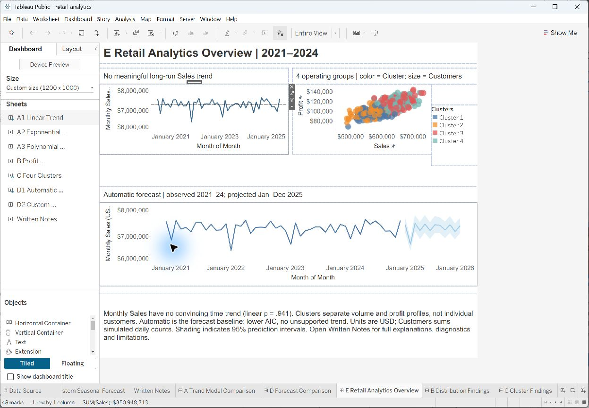
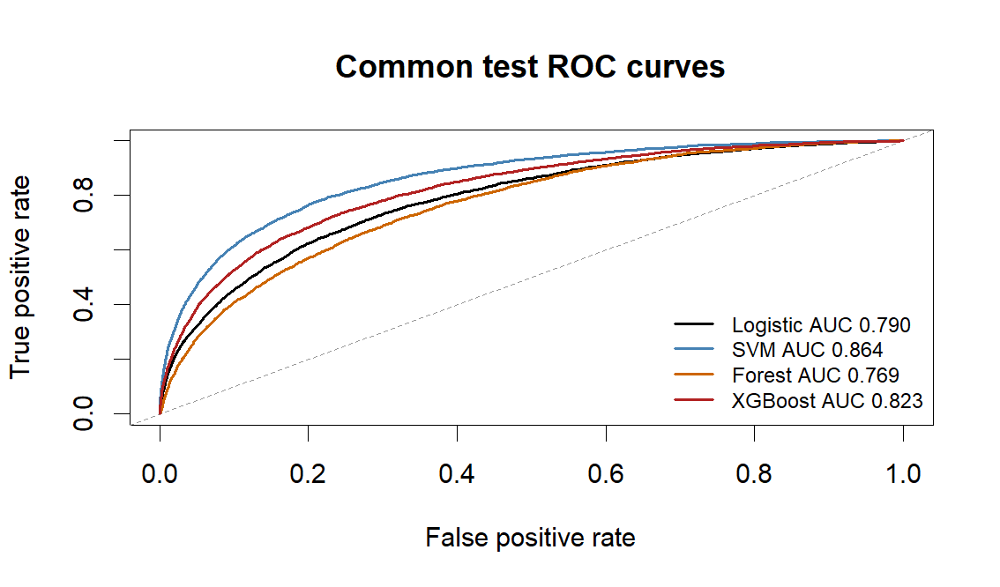
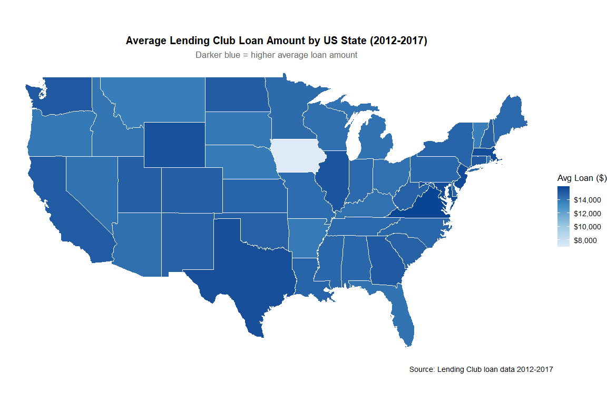
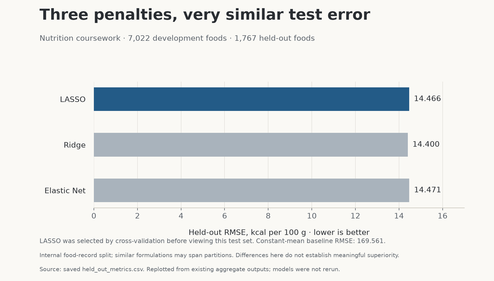

Retail performance in Tableau
Central leads sales; the regional gap is only 1.4%.
Two workbooks connect KPIs, dashboard actions, trends, and forecasts.
View case studySenior Specialist, Data Science at Santander Bank · Greater Boston
I turn business questions into clear reporting, dependable workflows, and practical applications.
Experience at
01 Selected work
Financial analysis, model evaluation, and applied AI, with methods and limitations attached. Coursework is labeled as coursework.

Central leads sales; the regional gap is only 1.4%.
Two workbooks connect KPIs, dashboard actions, trends, and forecasts.
View case study
SVM test log loss: 0.2304. Recall at 0.5: 27.0%.
Probability quality and missed positives, considered together. An academic benchmark separate from my employment.
View case studyPublicly featured in The Boston Globe in 2023.
Property details become listing copy through a ChatGPT API workflow.
View project
Six annual files joined into a repeatable financial analysis.
A descriptive R analysis combining 2012–2017 loan files with geographic lookups to explore loan grades, rates, borrower characteristics and regional patterns.
Read the case study
CV-selected LASSO: 14.47 kcal/100g held-out RMSE.
A comparison of LASSO, Ridge and Elastic Net using shared cross-validation folds, careful missing-value handling and a held-out food-record evaluation.
Read the case studyEarlier coursework adds Python data cleaning and SQL foundations.
github.com/Arman-MSBA02 Experience
Experience across financial services, consumer goods, healthcare, and higher education. These are the reporting and workflow problems I have worked on.
Professional work is summarized without publishing employer data or internal systems. The public NEC case studies are independent academic work.
Jul 2025 – Present
Santander Bank, N.A.
Make audit work easier to track.
Built internal audit reporting in Power BI, supported a Tableau migration, and developed Power Platform workflows for audit stakeholders: Power Apps request tracking and Power Automate reporting, approval, and notification flows. Promoted from Senior Specialist Business Intelligence.
Oct 2023 – Jun 2025
The Hershey Company
Move transformation logic closer to the data.
Converted Alteryx workflows into Snowflake SQL, optimized Power BI reporting models, and worked on Microsoft Fabric solutions involving Lakehouse, PySpark, API integrations, and data pipelines.
Apr 2023 – Sep 2023
CRICO
Built Power BI and Python analytics and prepared data through SQL and Snowflake ETL workflows.
Feb 2022 – Oct 2023
Northeastern University
Turn feedback into a structured view.
Created alumni-survey dashboards in Tableau and Power BI, used Python and the ChatGPT API for feedback analysis, and automated data collection with Selenium.
Jun 2022 – Feb 2023
Just Drive Media
Built R Shiny sentiment dashboards and used text analytics to support communication and brand analysis.
Mar 2020 – Sep 2021
INDEXBOARD
Analyzed SEC financial statements and automated research tasks with Python and Selenium.
03 Skills and continued learning
My current learning connects data engineering, business automation, and practical AI integration. NEC coursework gives me space to test methods, understand their limits, and turn the results into clear, reproducible projects.
In practice
Through NEC coursework
04 Education
05 Direction
I’m interested in senior BI, analytics engineering, and applied AI opportunities where I can work closely with business teams and build useful data products.
My focus is useful AI integration, dependable data workflows, and business applications. Coursework gives me a place to test methods, examine tradeoffs, and share what I learn.
06 Work with me
I can help teams clarify a reporting problem, improve a manual data workflow, or explore a practical AI use case. My approach starts with the business question, the available data, and a clear definition of what success should look like.
Clarify KPIs, review a manual report, and build a focused Power BI or Tableau view.
Possible deliverablesKPI definitions, a focused dashboard, and handover notes.
Consolidate sources and make repeatable transformations with SQL, Snowflake, Fabric, Python, or Power Platform.
Possible deliverablesA data-flow map, reusable transformations, and operating notes.
Identify a bounded workflow, build a small API-based prototype, and define human review and evaluation.
Possible deliverablesA bounded prototype, evaluation criteria, and a human-review workflow.
Turn financial, customer, or operational data into clear findings, limitations, and next actions.
Possible deliverablesAn analytical brief, evidence, limitations, and recommended next steps.
Contact
Have a workflow worth simplifying? Start with the repetitive task, the information it needs and what a useful result would look like.